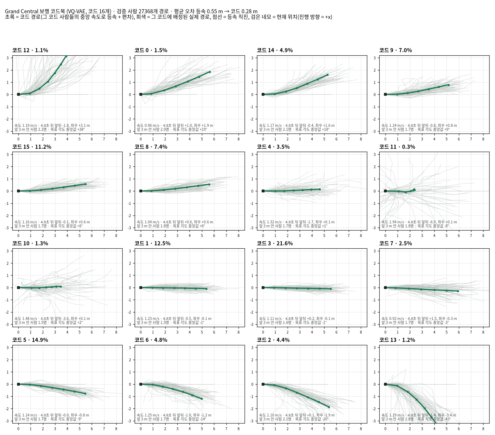
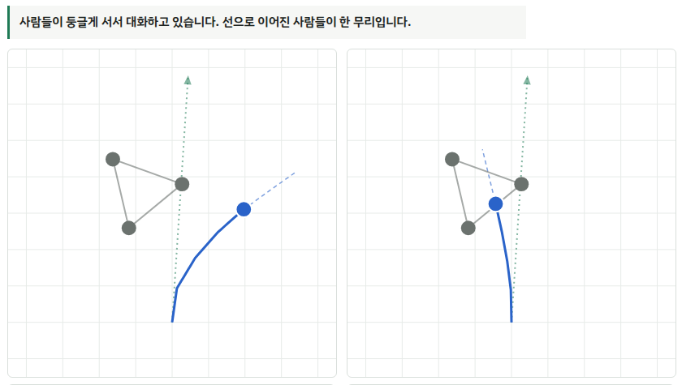
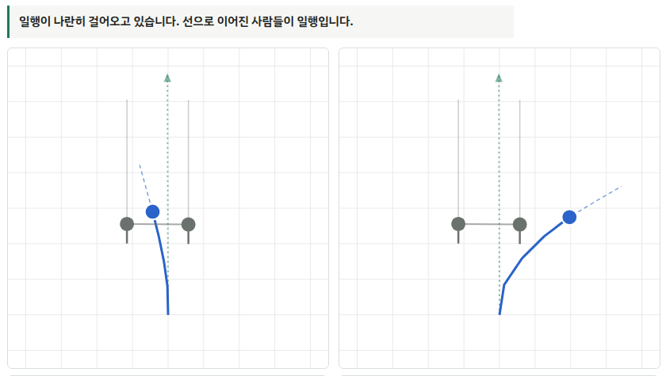
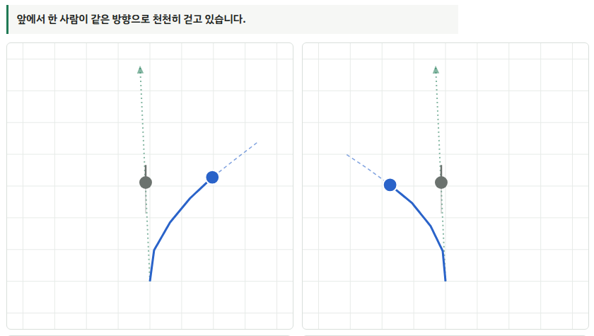

<title>11/4 이후 변경 총정리</title>
<meta name="claude:viewport-fit-sides" content="cover">
<link rel="stylesheet" href="https://fonts.googleapis.com/css2?family=IBM+Plex+Sans+KR:wght@400;600;700&family=IBM+Plex+Mono:wght@400;500&display=swap">
<style>
:root { --bg:#f6f7f5; --surface:#ffffff; --fg:#17221e; --muted:#55625c; --rule:#d6ddd8; --tint:#eaf0ec;
  --accent:#1f7a55; --warm:#b4532a; --code:#e7ece8; }
@media (prefers-color-scheme: dark) { :root:not([data-theme="light"]) {
  --bg:#121815; --surface:#1a221e; --fg:#e3e9e5; --muted:#9fb0a7; --rule:#2e3a34; --tint:#1f2a25;
  --accent:#5cc796; --warm:#e88b5f; --code:#26312c; color-scheme:dark } }
:root[data-theme="dark"] { --bg:#121815; --surface:#1a221e; --fg:#e3e9e5; --muted:#9fb0a7; --rule:#2e3a34; --tint:#1f2a25;
  --accent:#5cc796; --warm:#e88b5f; --code:#26312c; color-scheme:dark }
body { background:var(--bg); color:var(--fg); font-family:"IBM Plex Sans KR","Apple SD Gothic Neo","Malgun Gothic",system-ui,sans-serif;
  font-size:15px; line-height:1.7; padding-left:max(16px,env(safe-area-inset-left,0px)); padding-right:max(16px,env(safe-area-inset-right,0px)); }
main { max-width:900px; margin:0 auto; padding-block:40px 72px; }
main > * { min-width:0; }
h1 { font-size:1.75rem; line-height:1.3; margin:0 0 6px; text-wrap:balance; }
.meta { color:var(--muted); font-size:.85rem; margin-bottom:22px; }
.lead { font-size:1rem; border-left:4px solid var(--accent); background:var(--surface); padding:14px 18px; margin:0 0 28px; border-radius:0 8px 8px 0; }
h2 { font-size:1.25rem; margin:40px 0 10px; padding-bottom:6px; border-bottom:1px solid var(--rule); text-wrap:balance; }
h3 { font-size:1.02rem; margin:22px 0 6px; }
p { margin:0 0 10px; max-width:72ch; }
ul, ol { margin:0 0 12px; padding-left:22px; } li { margin-bottom:4px; }
.tw { overflow-x:auto; margin:6px 0 14px; }
table { border-collapse:collapse; width:100%; font-size:.88rem; background:var(--surface); min-width:560px; }
th, td { border-bottom:1px solid var(--rule); padding:7px 9px; text-align:left; vertical-align:top; }
th { background:var(--tint); font-weight:600; }
td.n, th.n { text-align:right; font-variant-numeric:tabular-nums; white-space:nowrap; }
tr.hl td { font-weight:700; }
td.ok { color:var(--accent); font-weight:700; } td.bad { color:var(--warm); font-weight:700; }
code { font-family:"IBM Plex Mono",ui-monospace,monospace; font-size:.82em; background:var(--code); padding:1px 4px; border-radius:3px; overflow-wrap:anywhere; }
.note { color:var(--muted); font-size:.84rem; }
figure { margin:10px 0 18px; }
figure img { width:100%; max-width:100%; border-radius:6px; border:1px solid var(--rule); background:#fff; display:block; }
figcaption { color:var(--muted); font-size:.84rem; margin-top:6px; }
.box { background:var(--tint); border-radius:8px; padding:12px 16px; margin:10px 0 16px; }
.grid2 { display:grid; grid-template-columns:repeat(auto-fit,minmax(260px,1fr)); gap:14px; }
.grid2 > * { min-width:0; }
</style>
<main>


<h1>Learning Individual Walking-Style Preferences for Crowd Navigation</h1>
<div class="meta">11/4 보고회 피드백 이후 변경 사항 총정리 · 2026-11-16 기준 (11/3 판 이후) · 코드 SocialNav <code>main 80e9628</code></div>

<p class="lead">11/4 피드백의 핵심은 세 가지였다. 데이터에서 무엇을 배웠는지가 불분명하다, 선호로 경로를 어떻게 “만드는지” 더 고민하라, VQ-VAE 코드북을 시도하라. 이에 따라 연구를 다시 짰다. ① 사람 보행 궤적으로 VQ-VAE 코드북(코드 16개)과 코드 prior를 학습해 <b>사람다운, 스타일이 다양한 후보 경로 생성기</b>로 쓴다. ② <b>안전은 선호에서 빼서 후보 필터</b>로 옮기고, 선호는 사람마다 갈리는 스타일 5개(지나가는 쪽, 앞/뒤, 양보, 우회 폭, 사람다움)로 다시 정의했다. ③ 평가는 regret 대신 처음 보는 장면에서의 <b>A/B 선택 일치율</b>이다. 합성 사용자 기준으로 prior만 쓰면 0.52–0.54(우연 수준)이고, 질문 5개면 0.81–0.84, 20개면 0.88–0.92다. 질문 5개에서 EUBO는 무작위보다 4/4, Active Query보다 3/4 설정에서 유의하게 좋다. 한편 목적지 누수를 걷어내면 주변 사람 정보가 코드 선택을 거의 설명하지 못했다. 그래서 “VQ-VAE가 사회적 상호작용을 배운다”는 주장은 하지 않는다. 정책(Crowd-FM) 샘플은 코드북보다 좌우 퍼짐이 약 4배 작아 후보 생성기로 쓰지 않는다. 실제 사람 검증을 위해 60문항 파일럿(v2)을 만들었고, 초록, 11/18 발표 자료, 코드 커밋까지 마쳤다. 2D 재생 폐루프(300 에피소드)에서는 선호가 실행 중에도 유지되고(걷는 동안의 후회 0.5 → 0.10–0.14) 안전 거리 0.5 m에서 prior 대비 도달·충돌 악화가 없었지만, 로봇 원인 충돌은 실제 사람의 약 2배로 플래너 자체의 안전성이 과제로 남았다.</p>

<h2>1. 11/4 시점 상태와 받은 피드백</h2>
<h3>11/4 시점 상태</h3>
<ul>
<li>후보는 Crowd-FM(flow matching) 정책 샘플이었고, 특징은 안전·효율이 섞인 6개(draft5)였다. 지표는 simple regret이었다.</li>
<li>사람별 전이 벤치마크(GC 150명 × 6장면)는 <b>부정적</b>이었다. 실제 사람의 경로로 맞춘 개인 θ가 처음 보는 장면에서 공통 θ보다 나빴고, 자기 장면과 남의 장면 사이에도 차이가 없었다. GC의 실제 경로는 사람보다 장면에 좌우된다.</li>
<li>고정된 θ*를 가진 합성 사용자에서는 EUBO가 잘 작동했다(EUBO 0.147 ≈ 정답 θ 적합 0.146, AQ보다 우수).</li>
</ul>
<h3>받은 피드백</h3>
<div class="tw"><table>
<tr><th style="width:5%">#</th><th style="width:47%">피드백</th><th>요지</th></tr>
<tr><td>1</td><td>데이터에서 무엇을 “배웠는지” 불분명</td><td>특징은 손으로 설계했고, 데이터는 정답(응답) 공급원으로만 쓰였다</td></tr>
<tr><td>2</td><td>선호는 상황에 따라 다르다</td><td>상황을 모델에 넣어라</td></tr>
<tr><td>3</td><td>선호로 경로를 어떻게 만들지 더 고민</td><td>정책이 많이 샘플링하고, 데이터에서 얻은 선호 기준으로 테스트 시점에 고르는 구조(Diffusion-ES 류)</td></tr>
<tr><td>4</td><td>선호에 맞춘 코드북을 학습해 보라</td><td>VQ-VAE를 살펴보라</td></tr>
</table></div>

<h2>2. 피드백별 대응</h2>
<div class="tw"><table>
<tr><th style="width:5%">#</th><th style="width:47%">한 것</th><th>결과와 판단</th></tr>
<tr><td>1</td><td>GC·ETH/UCY 보행 궤적으로 VQ-VAE 코드북(16개)과 p(코드 | 상황) prior 학습</td><td>데이터에서 배운 것: <b>행동 어휘(코드북)와 사람다움 점수(prior)</b>. 사회적 선호는 데이터의 코드 선택만으로는 드러나지 않았다(4절)</td></tr>
<tr><td>2</td><td>prior 입력에 상황(속도, 과거, 목적지, 주변 사람 요약 8개)을 넣음. 사람다움 특징이 상황마다 달라짐</td><td>주변 사람 정보의 기여는 거의 0. 스타일 특징(쪽, 앞/뒤)은 상황 속 충돌 상대 기준으로 계산</td></tr>
<tr><td>3</td><td>테스트 시점 선택 구조: 후보 생성 → 안전 필터 → 선호로 선택. Crowd-FM 샘플과 코드북의 다양성 비교</td><td>정책 샘플은 스타일이 거의 같아(좌우 퍼짐 0.11 m vs 0.52 m) 코드북을 생성기로 채택. 정책이 고른 코드를 다듬는 구조는 향후 과제(8절)</td></tr>
<tr><td>4</td><td>VQ-VAE 코드북 구현(<code>src/preference/traj_vqvae.py</code>)과 코드 위 선호 선택</td><td>코드북 후보 위 EUBO가 네 설정 모두 최저 regret(5절). 이후 스타일 설정으로 재정의(6절)</td></tr>
</table></div>

<h2>3. 바뀐 것 한눈에</h2>
<div class="tw"><table>
<tr><th style="width:18%">항목</th><th style="width:36%">11/4 이전</th><th>지금 (11/16)</th></tr>
<tr><td>후보 경로</td><td>Crowd-FM 정책 샘플 20개</td><td>VQ-VAE 코드 16개 (4.8초, 등속 대비 편차)</td></tr>
<tr><td>안전</td><td>선호 특징 안에 포함 (간격, 침범)</td><td>후보 필터: 등속 예측 최소 거리 ≥ 0.5 m, 진행 ≥ 최선의 0.5배, 안전 후보 ≥ 4개</td></tr>
<tr><td>선호 특징</td><td>draft5 (prior, 간격, 진척, 침범, 굴곡, 통과 방향)</td><td>부호 없는 스타일 5개: side, front, yield, detour, human</td></tr>
<tr><td>사용자</td><td>실제 GC 보행자 / 부호 고정 합성 θ*</td><td>합성 사용자 dense / sparse (부호 자유), 실제 사람은 파일럿</td></tr>
<tr><td>지표</td><td>simple regret</td><td>처음 보는 장면에서의 A/B 선택 일치율 (0.5 = 우연)</td></tr>
<tr><td>목적지</td><td>6.4초 뒤 실제 위치 (회피 경로가 누수됨)</td><td>트랙 마지막 위치, 12초 이상 앞 (ETH/UCY 본문은 8초)</td></tr>
<tr><td>질문 장면</td><td>앞 5 m 사람 / 예측 충돌</td><td>예측 충돌 장면 (장면 풀에 따른 차이 없음, 7절)</td></tr>
<tr><td>실제 사람 검증</td><td>없음</td><td>파일럿 v2 60문항 준비 (9절)</td></tr>
</table></div>

<h2>4. 데이터에서 무엇을 배웠나: 코드북과 목적지 누수</h2>
<figure><figcaption>GC 보행 코드북(VQ-VAE, 코드 16개). 초록 = 코드 경로, 회색 = 그 코드에 배정된 실제 검증 경로, 점선 = 등속 직진. 검증 경로 평균 오차는 등속 0.55 m → 코드 0.28 m.</figcaption></figure>
<p>이전 목표 입력은 “6.4초 뒤 그 사람의 실제 위치”였다. 회피 경로가 목표 안에 이미 들어 있어 사회적 효과를 흡수한다. 목표를 트랙 마지막 위치(12초 이상 앞)로 바꿔 같은 샘플에서 비교했다.</p>
<div class="tw"><table>
<tr><th>목표 입력</th><th class="n">GC NLL (자기 운동)</th><th class="n">+ 주변 사람</th><th class="n">ETH/UCY NLL</th><th class="n">+ 주변 사람</th></tr>
<tr><td>없음</td><td class="n">2.070</td><td class="n">−0.023</td><td class="n">2.427</td><td class="n">+0.004</td></tr>
<tr><td>6.4초 뒤 실제 위치 (누수)</td><td class="n">0.883</td><td class="n">+0.009</td><td class="n">0.988</td><td class="n">+0.042</td></tr>
<tr class="hl"><td>트랙 끝, 12초 이상 앞 (공정)</td><td class="n">1.872</td><td class="n">−0.006</td><td class="n">2.103</td><td class="n">+0.046</td></tr>
</table></div>
<p class="note">코드 예측 NLL, 낮을수록 좋음. seed 3개 평균. 검증 샘플 GC 20,027개, ETH/UCY 826개. ETH/UCY 8초 조건에서도 2.034 → 2.044로 사람 정보가 돕지 않았다.</p>
<div class="box"><b>결론:</b> 사람들이 어떤 경로 코드를 고르는지는 목적지와 자기 운동으로 거의 결정된다. 사회적 선호는 데이터의 코드 선택 분포만으로는 식별되지 않는다. 그래서 VQ-VAE의 역할은 “사람다운 후보 생성기 + 사람다움 점수”이고, 개인 선호는 질문으로 얻는다. 이것이 질문이 필요한 근거가 된다.</div>

<h2>5. 중간 결과: 코드 후보 위 선호 선택 (11/9, 이전 특징 설계)</h2>
<p>코드 16개를 후보로, 특징 6개(prior, 최소 간격, 진척, 침범, 굴곡, 통과 방향)로 A/B 질문 20개 후 처음 보는 상황에서 고른 정규화 regret이다(낮을수록 좋음, 합성 사용자 200명).</p>
<div class="tw"><table>
<tr><th>방법</th><th class="n">GC 비슷한</th><th class="n">GC 다양한</th><th class="n">ETH 비슷한</th><th class="n">ETH 다양한</th></tr>
<tr><td>사람 데이터 prior만</td><td class="n">0.083</td><td class="n">0.122</td><td class="n">0.152</td><td class="n">0.197</td></tr>
<tr><td>모두에게 같은 θ (θ* 평균)</td><td class="n">0.032</td><td class="n">0.082</td><td class="n">0.046</td><td class="n">0.122</td></tr>
<tr><td>Random 20개</td><td class="n">0.038</td><td class="n">0.065</td><td class="n">0.042</td><td class="n">0.062</td></tr>
<tr><td>ActiveQuery 20개</td><td class="n">0.035</td><td class="n">0.050</td><td class="n">0.048</td><td class="n">0.050</td></tr>
<tr class="hl"><td>EUBO 20개</td><td class="n">0.020</td><td class="n">0.036</td><td class="n">0.021</td><td class="n">0.039</td></tr>
</table></div>
<p class="note">이 설계는 특징 6개 중 4개가 “모두가 같은 방향을 좋아하는 양”(안전·효율)이라, 사람마다 다른 것은 정도뿐이었다. 그래서 11/9에 안전을 필터로 빼고 스타일 선호로 다시 정의했다(6절). 이 표는 본문에 쓰지 않는다.</p>

<h2>6. 본 결과: 스타일 선호 벤치마크 (11/11)</h2>
<p>예측 충돌 장면에서 안전 필터를 통과한 코드(중앙값 10개)만 쓰고, 그 안에서 스타일 5개로 고른다. 사용자마다 질문 장면 10개, 처음 보는 평가 장면 20개. 합성 사용자 200명, 답은 P(A) = σ(5(u<sub>A</sub> − u<sub>B</sub>)).</p>
<ul>
<li><b>dense</b>: θ* ~ N(0, I), 길이 1. 모든 축을 조금씩 신경 쓴다.</li>
<li><b>sparse</b>: 크기 ~ Dirichlet(0.3), 부호 무작위, 길이 1. 한두 축만 크게 신경 쓴다.</li>
</ul>
<div class="tw"><table>
<tr><th>설정 (질문 5개, 괄호 20개)</th><th class="n">prior</th><th class="n">Random</th><th class="n">AQ</th><th class="n">EUBO</th><th class="n">EUBO−Random</th><th class="n">EUBO−AQ</th></tr>
<tr><td>GC dense</td><td class="n">0.535</td><td class="n">0.789 (0.902)</td><td class="n">0.816 (0.898)</td><td class="n">0.828 (0.911)</td><td class="n ok">+0.039*</td><td class="n bad">+0.012</td></tr>
<tr><td>GC sparse</td><td class="n">0.522</td><td class="n">0.760 (0.874)</td><td class="n">0.793 (0.876)</td><td class="n">0.809 (0.892)</td><td class="n ok">+0.049*</td><td class="n ok">+0.016*</td></tr>
<tr><td>ETH/UCY dense (8초)</td><td class="n">0.536</td><td class="n">0.816 (0.903)</td><td class="n">0.824 (0.908)</td><td class="n">0.842 (0.920)</td><td class="n ok">+0.026*</td><td class="n ok">+0.019*</td></tr>
<tr><td>ETH/UCY sparse (8초)</td><td class="n">0.527</td><td class="n">0.780 (0.872)</td><td class="n">0.801 (0.885)</td><td class="n">0.824 (0.881)</td><td class="n ok">+0.044*</td><td class="n ok">+0.023*</td></tr>
</table></div>
<p class="note">* = 사용자 단위 짝지은 bootstrap 95% CI가 0을 포함하지 않음. GC dense EUBO−AQ는 [−0.002, +0.028]로 유의하지 않다. 논문 표: <code>results/codebook/paper_main_table.tex</code>.</p>
<ul>
<li>prior만으로는 개인 스타일을 맞히지 못한다(≈0.53). 합성 사용자를 서로 다르게 만들었으니 예상된 결과이고, 실제 사람이 서로 다른지는 파일럿이 보여야 한다.</li>
<li>EUBO의 이점은 질문이 적을 때 크다. 20개에서는 방법 간 차이가 줄고 유의 여부가 설정마다 갈린다.</li>
<li>안전 후보 안에 사람의 양쪽으로 모두 지나가는 선택지가 있는 장면은 GC 22%, ETH/UCY 5%뿐이다. 앞/뒤 둘 다는 27%, 10%(ETH/UCY는 12초 기준). 원인은 코드북이 아니라 기하다(4.8초 안에 0.5 m를 지키며 반대쪽으로 돌 경로가 없음). 그래서 일치율은 주로 양보·우회 폭·사람다움에서 나온다.</li>
</ul>

<h2>7. 점검: 결과가 설정 선택에 좌우되는가</h2>
<div class="tw"><table>
<tr><th style="width:24%">점검</th><th style="width:40%">내용</th><th>결과</th></tr>
<tr><td>질문 장면 풀 (GC)</td><td>충돌 12,159 / 비충돌 9,272 / 전체 21,431 장면에서 질문, 평가는 항상 충돌 장면</td><td>36개 비교 중 4개만 유의, 모두 비충돌·전체 쪽이 약간 좋음(EUBO dense 5개 +0.017, +0.020). “장면에 따른 차이 없음”</td></tr>
<tr><td>ETH/UCY 목적지 12초 → 8초</td><td>평가 풀 281 → 590 장면, 사람 48 → 88명</td><td>일치율 ±0.01 이내로 같음. 본문 8초, 12초는 부록 (<code>paper_appendix_eth_dest.tex</code>)</td></tr>
<tr><td>prior 입력의 주변 사람</td><td>ETH/UCY 8초 prior 재학습</td><td>NLL 2.034 → 2.044, 돕지 않음</td></tr>
<tr><td>ETH/Hotel 단일 장면 제외</td><td>장면 단위 leave-one-out</td><td>하지 않음. 두 장면을 합쳐도 샘플의 3%</td></tr>
</table></div>
<p class="note">ETH/UCY 평가 장면은 사실상 UCY다(8초 기준 eth 13 / hotel 6 / students001 543 / students003 346 / zara01 198 / zara02 143). 논문에 장면별 개수를 적는다.</p>

<h2>8. 후보를 코드북에서 만드는 이유: 정책 샘플의 다양성</h2>
<div class="tw"><table>
<tr><th>후보 (앞 2.4초로 잘라 비교)</th><th class="n">끝점 좌우 퍼짐</th><th class="n">후보 간 거리</th><th class="n">경로 길이 CV</th><th class="n">양쪽 통과</th><th class="n">앞/뒤 둘 다</th></tr>
<tr><td>Crowd-FM v3 (PRIEST 정제, 201장면)</td><td class="n">0.11 m</td><td class="n">0.13 m</td><td class="n">5%</td><td class="n">5%</td><td class="n">6%</td></tr>
<tr><td>Crowd-FM v3 원본</td><td class="n">0.12 m</td><td class="n">0.22 m</td><td class="n">7%</td><td class="n">5%</td><td class="n">9%</td></tr>
<tr><td>Crowd-FM gcp (900장면)</td><td class="n">0.13 m</td><td class="n">0.15 m</td><td class="n">6%</td><td class="n">6%</td><td class="n">8%</td></tr>
<tr class="hl"><td>VQ-VAE 코드북 (16개)</td><td class="n">0.52 m</td><td class="n">0.63 m</td><td class="n">25%</td><td class="n">22%</td><td class="n">36%</td></tr>
</table></div>
<ul>
<li>물어볼 “서로 다른 스타일”이 있어야 A/B 질문이 의미가 있다. 정책 샘플 20개는 거의 같은 경로라 선택지가 없다.</li>
<li>한계: Crowd-FM 샘플링 설정(guidance 0.01, 20개)은 바꿔 보지 않았다.</li>
<li>향후 구조: 코드북이 참조 경로를 제안하고 → 선호로 하나를 고르고 → Crowd-FM/PRIEST가 그 참조를 따라가며 안전하게 다듬는다(PRIEST <code>tracking_weight</code>). 피드백 3의 “정책 + 테스트 시점 선택”과 연결된다.</li>
</ul>

<h2>9. 실제 사람 파일럿: v1 → v2</h2>
<div class="tw"><table>
<tr><th style="width:18%">항목</th><th style="width:36%">v1 (11/11)</th><th>v2 (11/16)</th></tr>
<tr><td>문항</td><td>44개 (GC 장면, 5개 축 × 8 + 반복 4)</td><td>60개 = GC 44 + 일부러 만든 장면 16 (줄 서기, 대화 무리, 나란히 걷는 일행, 느린 보행자 × 4)</td></tr>
<tr><td>보기 간 최소 거리</td><td>0.5 m (88개 보기 중 22개가 0.7 m 미만, 화면에서 충돌처럼 보임)</td><td>0.8 m 이상, 사람·로봇 원도 실제 몸 크기(반지름 약 0.2 m)로 축소</td></tr>
<tr><td>특징</td><td>스타일 5개</td><td>+ 파일럿 전용 <b>group</b>: 같은 무리의 두 사람 사이를 지나가면 1</td></tr>
<tr><td>화면</td><td>장면만</td><td>장면 설명 문구, 같은 줄·일행을 잇는 선</td></tr>
<tr><td>진행</td><td>claude.ai 페이지 (로그인 필요)</td><td>+ 로그인 없는 오프라인 HTML (결과 JSON을 받아 분석)</td></tr>
</table></div>
<div class="grid2">
<figure><figcaption>줄 서기: 틈으로 가로지르기 vs 줄 끝으로 돌아가기</figcaption></figure>
<figure><figcaption>대화 무리: 바깥으로 돌기 vs 무리 사이로 지나가기</figcaption></figure>
<figure><figcaption>나란히 걷는 일행: 일행 사이로 vs 일행 전체를 피해</figcaption></figure>
<figure><figcaption>느린 보행자: 오른쪽 추월 vs 왼쪽 추월</figcaption></figure>
</div>
<ul>
<li>새 장면 16개는 GC가 아니라 배치 규칙으로 만들고 위치·간격·속도만 무작위로 바꾼 가상 장면이다. GC에는 줄 서기가 거의 없고 일행 표시가 없기 때문이다. 후보 경로, 안전 필터, 사람다움 점수는 GC로 학습한 것을 그대로 쓴다.</li>
<li>“돌아가기” 보기는 4.8초 코드북 때문에 크게 옆으로 꺾인다. 그래서 group 선호와 detour 선호가 섞인다. 분석에서는 둘을 따로 추정하지만 한계로 적는다.</li>
<li>분석(<code>utils/analyze_pilot.py</code>): 학습 42문항으로 개인 θ를 추정해 테스트 14문항을 예측한다. 비교 대상은 personal(본인 θ), shared(다른 참가자 공통 θ), prior(사람다운 경로)다. 반복 일관성(예측의 상한)과 참가자 간 답 일치율도 계산한다. 가짜 응답으로 끝까지 동작함을 확인했다.</li>
<li>아직 응답은 0건이다. 논문에 싣기 전 JBNU IRB 심의 면제 확인이 필요하다.</li>
</ul>

<h2>10. 2D 폐루프 실험 (11/16)</h2>
<p>개루프 결과가 실제로 움직일 때도 유지되는지 확인했다. GC 테스트 보행자 한 명(예측 충돌 장면에서 시작)을 로봇으로 바꾸고, 그 사람의 위치·방향·속도에서 출발해 그 사람의 실제 도착 지점까지 가게 했다. 다른 사람들은 기록대로 재생되며 로봇을 피하지 않는다. 에피소드 300개, 에피소드마다 합성 사용자 한 명.</p>
<ul>
<li><b>계획:</b> 0.8초마다 코드북 후보 16개를 새로 만들고 → 안전 필터 → 선택 → 첫 0.8초만 실행. 기준 속도는 시작 속도(순항 속도), 실행 뒤 진행 방향은 계획 경로의 접선. 목표 3 m 안에서는 목표로 직진. 안전 후보가 없으면 최소 거리가 가장 큰 코드(대체 단계).</li>
<li><b>선택 방식:</b> 무작위, prior(사람다운 경로), 선호(질문 5개 / 20개, EUBO로 다른 장면에서 미리 학습), 정답 θ*. 실제 사람이 걸은 경로도 같은 방식으로 잰다.</li>
<li><b>지표:</b> 목표 도달률, 도달 시간, 충돌(0.4 m 미만이 한 번이라도), 그중 로봇이 다가가서 난 충돌(가장 가까운 순간 로봇 쪽 접근 속도가 더 큼), 최소 거리, 걷는 동안의 선호 후회(θ* 기준, 안전 후보 안에서).</li>
<li><b>일행 제외:</b> 시작 시점에 1.5 m 안에서 같은 속도로 함께 걷는 사람(GC 테스트 보행자의 약 22%가 해당)은 로봇과 사람 기준 모두에서 장면에서 뺐다.</li>
</ul>
<h3>결과 (dense 사용자)</h3>
<div class="tw"><table>
<tr><th>안전 거리 0.5 m</th><th class="n">도달</th><th class="n">시간 (s)</th><th class="n">충돌</th><th class="n">로봇 원인 충돌</th><th class="n">최소 거리 (m)</th><th class="n">선호 후회</th></tr>
<tr><td>실제 사람</td><td class="n">1.000</td><td class="n">30.0</td><td class="n">0.313</td><td class="n">0.207</td><td class="n">0.523</td><td class="n">–</td></tr>
<tr><td>무작위</td><td class="n">0.970</td><td class="n">22.3</td><td class="n">0.643</td><td class="n">0.413</td><td class="n">0.352</td><td class="n">0.498</td></tr>
<tr><td>prior</td><td class="n">0.977</td><td class="n">21.2</td><td class="n">0.590</td><td class="n">0.430</td><td class="n">0.377</td><td class="n">0.519</td></tr>
<tr class="hl"><td>선호 (질문 5개)</td><td class="n">0.960</td><td class="n">23.5</td><td class="n">0.590</td><td class="n">0.393</td><td class="n">0.374</td><td class="n">0.095</td></tr>
<tr><td>선호 (질문 20개)</td><td class="n">0.957</td><td class="n">23.6</td><td class="n">0.623</td><td class="n">0.433</td><td class="n">0.356</td><td class="n">0.032</td></tr>
<tr><td>정답 θ*</td><td class="n">0.950</td><td class="n">23.9</td><td class="n">0.607</td><td class="n">0.387</td><td class="n">0.372</td><td class="n">0.000</td></tr>
</table></div>
<div class="tw"><table>
<tr><th>안전 거리 0.8 m</th><th class="n">도달</th><th class="n">시간 (s)</th><th class="n">충돌</th><th class="n">로봇 원인 충돌</th><th class="n">최소 거리 (m)</th><th class="n">선호 후회</th></tr>
<tr><td>실제 사람</td><td class="n">1.000</td><td class="n">32.5</td><td class="n">0.280</td><td class="n">0.180</td><td class="n">0.564</td><td class="n">–</td></tr>
<tr><td>무작위</td><td class="n">0.877</td><td class="n">22.3</td><td class="n">0.390</td><td class="n">0.220</td><td class="n">0.533</td><td class="n">0.502</td></tr>
<tr><td>prior</td><td class="n">0.903</td><td class="n">22.0</td><td class="n">0.410</td><td class="n">0.283</td><td class="n">0.513</td><td class="n">0.514</td></tr>
<tr class="hl"><td>선호 (질문 5개)</td><td class="n">0.843</td><td class="n">23.3</td><td class="n">0.450</td><td class="n">0.307</td><td class="n">0.498</td><td class="n">0.102</td></tr>
<tr><td>선호 (질문 20개)</td><td class="n">0.853</td><td class="n">22.8</td><td class="n">0.417</td><td class="n">0.273</td><td class="n">0.513</td><td class="n">0.037</td></tr>
<tr><td>정답 θ*</td><td class="n">0.833</td><td class="n">22.9</td><td class="n">0.430</td><td class="n">0.293</td><td class="n">0.502</td><td class="n">0.000</td></tr>
</table></div>
<p class="note">충돌·로봇 원인 충돌·도달은 에피소드 비율. 시간은 도달한 에피소드의 평균(실제 사람은 오래 머무는 사람이 있어 평균이 크다, 중앙값 약 19–20초). 대체 단계 비율: 0.5 m에서 4%, 0.8 m에서 11–12%. 안전 거리마다 후보 풀이 달라 두 표의 에피소드는 서로 다르므로, 표 안에서만 비교한다.</p>
<h3>선호 (질문 5개) − prior, 같은 에피소드의 짝지은 차이</h3>
<div class="tw"><table>
<tr><th>설정</th><th class="n">도달</th><th class="n">충돌</th><th class="n">로봇 원인 충돌</th><th class="n">선호 후회</th></tr>
<tr><td>0.5 m · dense</td><td class="n">−0.017 [−0.043, +0.010]</td><td class="n">+0.000 [−0.063, +0.063]</td><td class="n">−0.037 [−0.103, +0.030]</td><td class="n ok">−0.423*</td></tr>
<tr><td>0.5 m · sparse</td><td class="n">−0.020 [−0.043, +0.003]</td><td class="n">+0.027 [−0.033, +0.087]</td><td class="n">−0.010 [−0.080, +0.057]</td><td class="n ok">−0.368*</td></tr>
<tr><td>0.8 m · dense</td><td class="n bad">−0.060 [−0.103, −0.017]</td><td class="n">+0.040 [−0.023, +0.107]</td><td class="n">+0.023 [−0.040, +0.087]</td><td class="n ok">−0.412*</td></tr>
<tr><td>0.8 m · sparse</td><td class="n bad">−0.077 [−0.123, −0.030]</td><td class="n bad">+0.077 [+0.010, +0.143]</td><td class="n">−0.007 [−0.070, +0.057]</td><td class="n ok">−0.386*</td></tr>
</table></div>
<p class="note">에피소드 단위 bootstrap 95% CI. * 및 색 = CI가 0을 포함하지 않음. 코드: <code>utils/closed_loop_2d.py</code>, 결과: <code>results/codebook/closed_loop/</code>.</p>
<div class="box"><b>해석.</b> ① 선호는 실행 중에도 유지된다: 걷는 동안의 후회가 prior·무작위의 약 0.5에서 질문 5개로 0.10–0.14, 20개로 0.03–0.07로 줄어, 개루프 결과(6절)와 같은 그림이다. ② 안전 거리 0.5 m에서는 선호를 반영해도 도달·충돌이 prior와 유의하게 다르지 않다. ③ 0.8 m에서는 안전 후보가 줄어(대체 단계 11–12%) 선호를 따르면 도달이 6–8%p 떨어지고, sparse 사용자에서는 충돌도 늘었다. ④ 절대 안전성은 부족하다: 0.5 m에서 로봇 원인 충돌 39–43%로 실제 사람(21%)의 약 2배이고, 정답 θ*도 같다. 문제는 선호가 아니라 플래너(등속 예측 필터, 멈추는 후보 없음, 4.8초 코드)다. 0.8 m에서는 22–31%로 사람(18%)에 가까워진다.</div>
<ul>
<li>논문에 쓸 수 있는 주장: “선호를 반영한 선택은 실행 중에도 사용자의 선호를 유지하며, 같은 안전 필터 아래에서 prior 대비 도달·충돌을 유의하게 악화시키지 않는다(0.5 m).” 절대 충돌률이 높은 것은 한계로 명시한다.</li>
<li>재생 보행자는 로봇을 피하지 않으므로 실제보다 어려운 설정이고, GC 주석 잡음 때문에 실제 사람도 0.4 m 기준 충돌이 28–31%로 잡힌다. 그래서 실제 사람 행을 함께 보고한다.</li>
<li>개선 후보: 정지·감속 후보 추가, 안전 필터에 예측 불확실성 반영, 고른 코드를 국소 플래너(PRIEST 등)가 다듬기, 반응형 보행자(social force).</li>
</ul>

<h2>11. 정정하거나 철회한 주장</h2>
<div class="tw"><table>
<tr><th style="width:42%">이전 주장 / 문제</th><th>정정</th></tr>
<tr><td>10/28 “공통 θ ≈ 무작위이므로 사람마다 선호가 다르다”</td><td>철회. 사람별 전이 실험에서 GC 실제 경로는 사람보다 장면에 좌우됨(11/3–4)</td></tr>
<tr><td>“충돌 장면에서 질문해야 한다” (11/9, 이전 설계)</td><td>철회. 안전 특징이 충돌 장면에서만 달라지던 설계의 산물이고, 스타일 설정에서는 재현되지 않음</td></tr>
<tr><td>“VQ-VAE가 사회적 상호작용을 학습한다”</td><td>주장하지 않음. 목적지 누수를 걷어내면 주변 사람 정보의 기여가 사실상 0</td></tr>
<tr><td>ETH 12초 짝지은 차이 표 (11/11 게시)</td><td>gauss와 sparse 열이 뒤바뀌어 있었음. JSON에서 다시 읽어 수정</td></tr>
<tr><td>초록 “EUBO가 AQ와 무작위보다 좋다”</td><td>“무작위보다 4/4, AQ보다 3/4 설정”으로 정확히 수정 (GC dense는 유의하지 않음)</td></tr>
<tr><td>파일럿 v1 보기 최소 거리 0.5 m</td><td>화면에서 충돌처럼 보여 0.8 m로 상향 (v2)</td></tr>
</table></div>

<h2>12. 만든 것</h2>
<div class="tw"><table>
<tr><th style="width:24%">산출물</th><th>내용과 위치</th></tr>
<tr><td>초록 (OpenReview)</td><td>약 190단어, 합성 사용자 결과만. 제목 “Learning Individual Walking-Style Preferences for Crowd Navigation from a Few Pairwise Queries”</td></tr>
<tr><td>11/18 발표 자료</td><td>14쪽. <code>reports/labmeeting_1118.pdf</code></td></tr>
<tr><td>논문 표</td><td><code>results/codebook/paper_main_table.tex</code>, <code>paper_appendix_eth_dest.tex</code></td></tr>
<tr><td>파일럿</td><td>60문항 claude.ai 페이지, 오프라인판 <code>results/codebook/pilot_v2/pilot_offline.html</code></td></tr>
<tr><td>코드 관리</td><td>11/16에 모든 코드·결과를 <code>main</code>에 커밋, 본인 GitHub(<code>dlwn0914-prog/SocialNav</code>)에 푸시 (<code>data/</code>, <code>model/</code> 제외)</td></tr>
</table></div>

<h2>13. 한계, 남은 일, 11/18에 결정받을 것</h2>
<h3>한계 (심각도 순)</h3>
<ol>
<li><b>합성 사용자:</b> 선호 모델과 평가 모델이 같은 선형 형태다. 파일럿으로 일부 보완한다.</li>
<li><b>폐루프 안전성:</b> 2D 재생 폐루프(10절)에서 선호는 유지되고 prior 대비 악화는 없지만(0.5 m), 로봇 원인 충돌이 실제 사람의 약 2배다. 보행자는 로봇에 반응하지 않는다.</li>
<li><b>4.8초 코드북:</b> 돌아가기 = 큰 우회. 좌/우·앞/뒤 선택지가 있는 장면이 적다(GC 22%).</li>
<li><b>선형 선호 모델:</b> 해석 가능성으로 정당화한다. 파일럿에서 예측 정확도가 반복 일관성에 얼마나 가까운지로 점검한다.</li>
<li><b>안전 거리 불일치:</b> 벤치마크 0.5 m, 파일럿 0.8 m.</li>
</ol>
<h3>11/18 결정받을 것</h3>
<div class="tw"><table>
<tr><th style="width:5%">#</th><th style="width:45%">질문</th><th>제안</th></tr>
<tr><td>1</td><td>후보 생성: 코드북 유지, 정책으로 다듬기는 향후?</td><td>유지. 정책 샘플링 설정 변경 실험은 1–2시간이면 가능</td></tr>
<tr><td>2</td><td>폐루프 평가 범위</td><td>2D 재생 폐루프 완료(10절). 플래너 안전성 개선(정지 후보 등)을 제출 전에 할지, Gazebo는 향후</td></tr>
<tr><td>3</td><td>파일럿 IRB 심의 면제 신청 (연구 책임자: 교수님)</td><td>면제 확인 후 8–10명 수집, 결과는 반박 기간이나 수정본에</td></tr>
<tr><td>4</td><td>벤치마크 안전 거리를 0.8 m로 재실행할지</td><td>파일럿과 맞추려면 재실행</td></tr>
</table></div>
<h3>일정</h3>
<div class="tw"><table>
<tr><th style="width:24%">날짜</th><th>할 일</th></tr>
<tr><td>11/18</td><td>랩미팅, 초록 입력</td></tr>
<tr><td>11/19–22</td><td>원고 작성, 폐루프 안전성 개선, (가능하면) 0.8 m 재실행</td></tr>
<tr><td>11/23–25</td><td>그림 정리, 교정, OpenReview 제출</td></tr>
</table></div>

<h2>14. 코드와 결과 위치</h2>
<div class="tw"><table>
<tr><th style="width:42%">파일</th><th>역할</th></tr>
<tr><td><code>src/preference/traj_vqvae.py</code>, <code>utils/train_traj_vqvae.py</code></td><td>VQ-VAE 코드북 모델과 학습</td></tr>
<tr><td><code>utils/build_gc_traj_dataset.py</code>, <code>build_ethucy_traj_dataset.py</code></td><td>데이터셋 (목적지 dest, dest_t)</td></tr>
<tr><td><code>utils/train_code_prior.py</code></td><td>p(코드 | 상황) prior (<code>--goal</code>, <code>--min-dest-t</code>)</td></tr>
<tr><td><code>utils/code_preference_benchmark.py</code></td><td>코드 후보 위 선호 선택 (5절)</td></tr>
<tr><td><code>utils/style_preference_benchmark.py</code></td><td>스타일 선호 벤치마크 (6–7절, <code>--query-pool</code>)</td></tr>
<tr><td><code>utils/build_pilot_questionnaire.py</code>, <code>build_pilot_templates.py</code></td><td>파일럿 문항 (GC, 가상 장면)</td></tr>
<tr><td><code>utils/analyze_pilot.py</code></td><td>파일럿 응답 분석</td></tr>
<tr><td><code>utils/closed_loop_2d.py</code></td><td>2D 재생 폐루프 (10절), 결과 <code>results/codebook/closed_loop/</code></td></tr>
<tr><td><code>results/codebook/</code></td><td>goalfix, codepref, style, style_pool, dest8, pilot, pilot_v2, 논문 표</td></tr>
</table></div>


</main>
